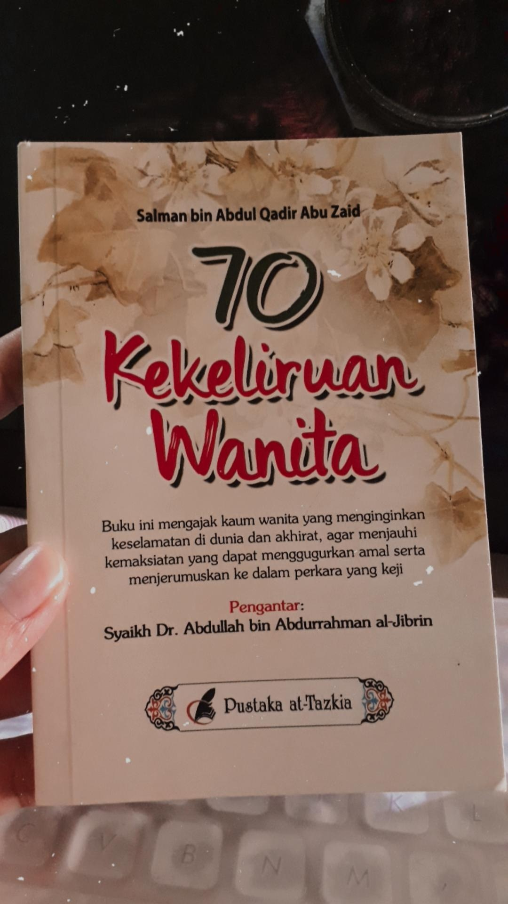

Artikel
Berbagi Kisah Belajar di Saat Pandemi

11 jan 2021
Situasi di kala pandemi tentu bukan sesuatu yang begitu menyenangkan karena kita dituntut untuk melakukan semua kegiatan di dalam rumah, salah satunya belajar belajar di kala pandemi Read More
Tutorial Membuat Daftar Pustaka
11 jan 2021
Menjadi seorang pelajar apalagi mahasiswa tentu tidak lepas dengan yang namanya membuat makalah dan ditambah lagi dengan dengan tugas yang menumpuk karena itu tentu dibutuhkan cara yang praktis untuk mengerjakannya. Oleh karena itu saya akan membagikan tutorial membuat Daftar Pustaka Read MoreRiview Buku : 70 Kekeliruan Wanita
